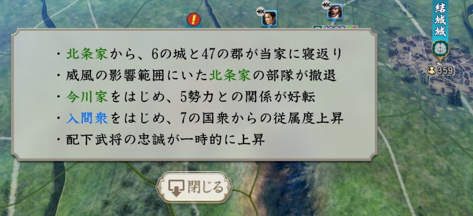
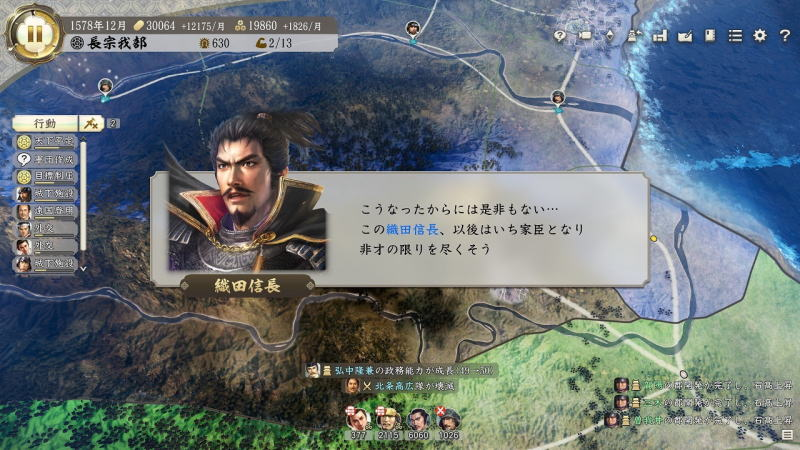
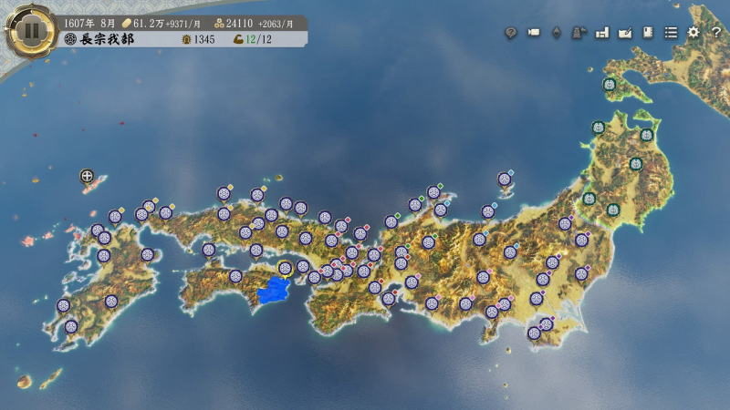

信長の野望・新生
| グラフィック | ☆☆☆☆ | 4 |
|---|---|---|
| 音楽 | ☆☆☆ | 3 |
| ゲーム性 | ☆☆☆☆☆ | 5 |
| ストーリー | ☆☆☆ | 3 |
| ユーザー視点 | ☆☆☆ | 3 |
まず、このゲームは「歴史シミュレーション」である。
それを前提として今まで数多くリリースされてきた。
私が本シリーズは「将星録」というのが最後なのだが、そこから一気にこのシリーズに
タイムワープしてきている。なので途中経過は一切知らないが故に評価は甘めかも知れない。
だが、１５０時間ほどやってみた結果として総括としては
「非常に面白い」
飽きていて数十年やってなかったから面白いと感じただけでは？
と言われそうだが、そうではない。そう思わせる根幹は下記である。
「歴史シミュレーション」から「ゲーム性重視」へ移行した。
どういう事かというと、従来、「将星録（古すぎではあるが）」は確かに歴史シミュレーションだったのである。
だが、この「新生」については、文字通り、コアコンセプトを新生させたのではないかと思わせられる内容になっている。
内容としては主に下記の通りだ。
・歴史は史実で進むべきであり、歴史を大きく変えようという試みは結構だが、史実が根幹である。
つまり、弱小国は天下統一できない。（当時も出来たのかも知れないが、私の当時のプレイヤースキルでは無理）
これに対して、幾つかのルール制定が行われた。
初期ゲーム開始時点で、各国の兵力差は極力排除しイーブンな関係とした。
初期開始で圧倒的に兵力差があると”史実”を覆す事はできない。ただしこの”新生”では
その兵力差が小さいので（時間経過すれば、当然変化していくよ（＾＾；）、初期で色々画策すれば
覆す事は可能になっている。これは開発陣からのメッセージだと受け止められる。
第二として、忠誠心のパラメータが理不尽ではなくなっている。”史実”であれば、武将ｘｘはｘｘ国に居るはずがない。
それが基本原則なのだが、この”新生”では（しつこく書くが）武将ｘｘを我が軍に居ていただける場合がある。
運よく武将を家臣に加えられた場合はきちんと褒美を与えよう。領土も与え、官職も付与して上げれば良い。
それすれば忠誠心は”普通”に上がり、かつ、忠誠心の通り仕え続けてくれるだろう。
第三、これがおそらくもっとも重要なのだが、”威風”のシステムを最大限駆使すれば、”史実”では
到底起こりえない事象を引き起こす事ができるのだ！！
「いやいや、それって単なるうたい文句でしょ？」
と言われそうだが、証明として、このスクリーンショットをご覧いただきたい。

確かに「２５０００ｖｓ４００００」の合戦で形勢逆転させた結果が全国に轟くと影響が出るのは、そうなんだろうけど。
だからといって、「北条家から、６の城と４７の群が当家に寝返り」は明らかにありえんだろう！？
その他はまあそういう事もあったかもしれないね、と思いつつ。（忠誠心が上がるのは嬉しいねえ）
弱小国でも合戦に持ち込んで上手く運べば、一気に形勢を覆す事は可能である。
なのでトータルで言えば、このゲーム。「歴史を簡単に崩壊させる仕組み」が備わっている、という事だ。
それはつまり「歴史シミュレーション」ではなく「ゲーム性重視」となった証拠であるといえる。
ただし、賛否両論もあるだろう。ここでは一件ずつ見ておきたい。
・PK商法は変わってないんだよね？
根本的には変わってはいないと思われる。ただし、初期の無印でも追加武将登録はできた。
これだけでも良しと捉えたい。
・PK商法以外にアップデートしないんだよね？
そうなんだろうけどマイナーパッチ修正で「低難易度」が追加されたのは事実。
ユーザー要望はある程度汲み取ってくれていそうだ。
・知行する前にまず大名直属で代官をしないと行けないのは面倒だ。
そうだね。でも、そんなもんじゃないのかなぁ（苦笑）
確かに強い武将を起用したら、即戦力で配置したいのが本音だけどね（＾＾；
・合戦ボタンは「大名」でしか発動できない。
まあ、これもそういうルールだから・・・やっぱり軍団が沢山集まって、「ハイ突撃ー！」
という時に大名がそばに居て欲しいじゃん（＾＾；
・攻城戦が無くなったんだよね。つまんない。
これは一理あるね。フィールド上で攻城する時に「包囲」と「強攻」が選べるんだけどそれじゃ物足りない。
攻城戦が好きなユーザーは確かに居るので、開発陣は汲み取ってあげるべきでしょう。
・AIが無能。アホ。
当然でしょう。２０２３年でも人工知能はまだまだ未熟。ただし、これについては別途議論が必要。
人間である我々は果たして優秀なAIを望んでいるのだろうか。AIはこれからもアホであってほしい。
※軍団形成したとたん、攻めてくれなくなった！という声もあるが、それはその通りです！！
・敵からの波状攻撃が辛すぎる。一旦止めても次々攻めてくる。
よりゲーム化したという事ですね。この辛さは「歴史シミュレーション」で培われた
ライトプレイヤー諸君にとっては苦しいかもしれないね。ハハハ。
まあ、俺なら何度でも受けて立ってやるがな！（最後敗北してゲームリセットしたけどな！）
※でも、波状攻撃はゲームでは普通です。序盤はあまりないけど、後半になると
※波状攻撃はありうる前提として覚悟した方が良いですね。
・「攻撃目標」にされていなくても、出陣を食らったんだが・・・
うん、そうだね。戦国時代だし。プレイヤー側も楽勝だと判断したら「攻撃目標」なしでいきなり出陣してるよね。
・いや、ていうか「歴史シミュレーション」が好きだったんだけど・・・これ「信長の野望」じゃなくなってる。
ううん・・・そうだね。この観点がまさに賛否両論だね（汗）
おいらは好きだったので、ここは一つ「完全史実モード」があった方が良いかもね。
開発陣、さじ加減は任せた！（苦笑）
いろいろご意見ありますが、これだけ意見が集まっているという事は、この作品が良い意味で
プレイヤーの皆さんに影響を与えたという事ではないかと思います。
で、何はともあれ、天下統一まで一度やってみました。
天下統一を狙う上で一番肝だったのは、やはりこの武将でした。

最終系としては、この形。

長宗我部で開始。
九州の島津家は、序盤では狙わず最後まで残しておく。
※大友家と拮抗する時期があるので強くはなるが、そこまで膨れ上がったりはしない※
初期は四国制圧にあまり固執し過ぎず、近畿地方を狙う形。ズバリ”三好家”を制圧！
三好家と連合を組むと安泰するかに見えるが、その先を狙う事が出来なくなる。なのでゲーム性重視となった
初期のイーブンをねらい打って先んじて潰せばよい。
長期プランとして北条家が普通に伸びるので、東北の伊達家と同盟を組んだ形とした。
中盤から伊達家にはたびたび北条家に攻撃を仕掛けてもらうように計略（北条家に少しでも消耗してもらう形）
あとは、中盤の最大の山場。織田信長を何としても制圧する事！（これがメイン・ミッション！）
無事に織田信長を家臣にしたら、あとはお作業です。織田信長と合戦はもうあまりやりたくはない（苦笑）
後半、膨れ上がった北条家を制圧は難しかったが、時間が少々かかるだけの事。
当初の長期プランである程度抑止していたので単なる消耗戦で上手くいきました。
最後に伊達家を制圧するかどうかは自由としました。
スクリーンショットは直前の状態。ここから同盟破棄すれば天下統一は確定です。
実際に天下統一したらどうなるかは、ご自分の目で確認してみてください！